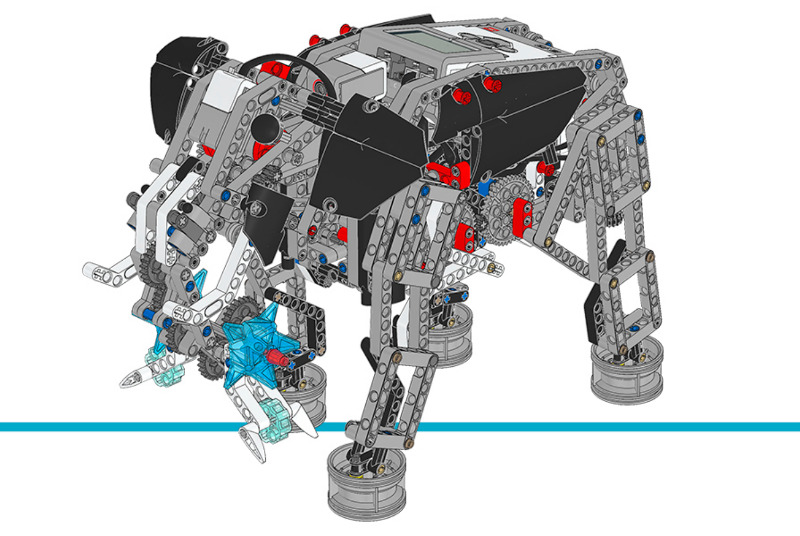

Elephant¶
This example project makes the Elephant walk, raise its trunk, and play sounds in response to pressing the buttons of the EV3 Brick.
Building instructions
Click here to find all building instructions for the Expansion Set Models, or use this link to go to the Elephant directly.

Figure 31 Elephant
Example program
#!/usr/bin/env pybricks-micropython
"""
Example LEGO® MINDSTORMS® EV3 Elephant Program
----------------------------------------------
This program requires LEGO® EV3 MicroPython v2.0.
Download: https://education.lego.com/en-us/support/mindstorms-ev3/python-for-ev3
Building instructions can be found at:
https://education.lego.com/en-us/support/mindstorms-ev3/building-instructions#building-expansion
"""
from pybricks.hubs import EV3Brick
from pybricks.ev3devices import Motor, ColorSensor, TouchSensor
from pybricks.parameters import Port, Direction, Color, Button
from pybricks.tools import wait, StopWatch
from pybricks.media.ev3dev import SoundFile
# Initialize the EV3 brick.
ev3 = EV3Brick()
# Configure the legs motor, which moves all four legs. Set the motor
# direction to counterclockwise, so that positive speed values make
# the legs move forward.
legs_motor = Motor(Port.A, Direction.COUNTERCLOCKWISE)
# Configure the trunk motor. Set the motor direction to
# counterclockwise, so that positive speed values make the trunk move
# upward.
trunk_motor = Motor(Port.B, Direction.COUNTERCLOCKWISE)
# Configure the neck motor with default settings.
neck_motor = Motor(Port.D)
# Set up the Touch Sensor. It is used to detect when the trunk has
# moved to its maximum position.
touch_sensor = TouchSensor(Port.S1)
# Set up the Color Sensor. It is used to detect the red beam when the
# neck has moved to its maximum position.
color_sensor = ColorSensor(Port.S4)
# Set up the Timer. It is used to exit the input loop after 1 second.
timer = StopWatch()
def reset():
# This function resets the model to its resting position.
# Run the neck motor until the red beam is detected.
neck_motor.run(750)
while color_sensor.color() != Color.RED:
wait(10)
neck_motor.brake()
# Run the trunk motor until the Touch Sensor is pressed.
trunk_motor.run(600)
while not touch_sensor.pressed():
wait(10)
trunk_motor.brake()
# Play a sound.
ev3.speaker.play_file(SoundFile.ELEPHANT_CALL)
# Run the neck and trunk motors to their resting positions.
neck_motor.run_angle(-600, 700, wait=False)
trunk_motor.run_angle(-900, 750)
wait(0.2)
# Reset the neck and trunk motors' angles to "0." This means that
# when they rotate to "0" later on, they return to their resting
# positions.
neck_motor.reset_angle(0)
trunk_motor.reset_angle(0)
def grab():
# This function grabs and picks up an object.
# Reset the model to its resting position.
reset()
# Run a sequence of movements using the neck and trunk motors to
# grab and pick up an object.
trunk_motor.run_angle(1000, 300, wait=False)
neck_motor.run_angle(1500, 350)
neck_motor.run_angle(-750, 350)
neck_motor.run_time(-150, 1000, wait=False)
trunk_motor.run_angle(-700, 500)
trunk_motor.run_angle(-300, 300, wait=False)
neck_motor.run_angle(450, 400)
# Reset the model to its resting position.
reset()
# This is the main part of the program. It is a loop that repeats
# endlessly.
#
# First, it resets the Timer and the steps variable.
# Second, it waits for commands given by pressing the Brick Buttons.
# Finally, it runs the legs motor if the steps variable is not "0."
#
# Then the process starts over, so it can accept new commands.
while True:
# Reset the Timer and the steps variable.
timer.reset()
steps = 0
# Wait until any Brick Button is pressed.
while not any(ev3.buttons.pressed()):
wait(10)
# Respond to the Brick Button press.
while timer.time() < 1000:
# Check whether Up Button is pressed, and increase the steps
# variable by 1 if it is.
if Button.UP in ev3.buttons.pressed():
steps += 1
# Reset the Timer to enable entering multiple commands.
timer.reset()
ev3.speaker.beep(600)
# To avoid registering the same command again, wait until
# the Up Button is released before continuing.
while Button.UP in ev3.buttons.pressed():
wait(10)
# Check whether Down Button is pressed, and decrease the steps
# variable by 1 if it is.
if Button.DOWN in ev3.buttons.pressed():
steps -= 1
# Reset the Timer to enable entering multiple commands.
timer.reset()
ev3.speaker.beep(1200)
# To avoid registering the same command again, wait until
# the Down Button is released before continuing.
while Button.DOWN in ev3.buttons.pressed():
wait(10)
# Lift the trunk and roar.
if Button.LEFT in ev3.buttons.pressed():
trunk_motor.run(300)
while not touch_sensor.pressed():
wait(10)
trunk_motor.run_angle(-100, 30)
reset()
# Grab an object.
if Button.RIGHT in ev3.buttons.pressed():
grab()
# Play a sound.
if Button.CENTER in ev3.buttons.pressed():
ev3.speaker.play_file(SoundFile.ELEPHANT_CALL)
# Check if the steps variable is not "0."
if steps != 0:
# Run the legs motor for the number of steps. Each step
# requires the motor to turn 900 degrees.
angle = 900 * steps
legs_motor.run_angle(1000, angle)